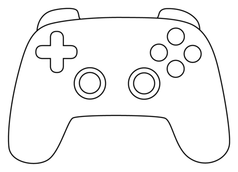
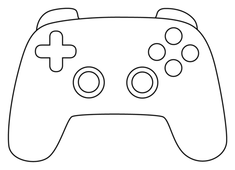

HENRY FABRICIO FLOREZ PACHECO
INGENIERO INDUSTRIAL
Egresado de la Universidad Cooperativa de Colombia capacitado para el mejoramiento continuo de los procesos, la optimización de los recursos, coordinar y supervisar el talento humano al mismo tiempo cuidar de su bienestar. Soy una persona proactiva, responsable, colaboradora, organizada y con una gran motivación, soy capaz de adaptarme a cualquier circunstancia y dar siempre lo mejor de mí, me esfuerzo por trabajar en equipo y fomentar valores como el compañerismo.
EXPERIENCIA LABORAL
Papas la pastusita
2022-2023 - sistemas de gestion y calidad, oficios administrativos
Consorcio colombia adelante
Feb2022-Ago2022 - supervisor, Manejo de personal. Capacitacion,coordinacion y asesoramiento a equipo de talento humano
Prevenir sig
Sep2019-Jun2021 - Auxiliar administrativo, Auxiliar en seguridad y salud en el trabajo (recurso humano, elaboracion, actualización e implementacion del sg-sst)
EDUCACIÓN
Universidad Cooperativa de Colombia Sede Pasto
Ingeniero industrial
Colegio Bolivariano
bachiller